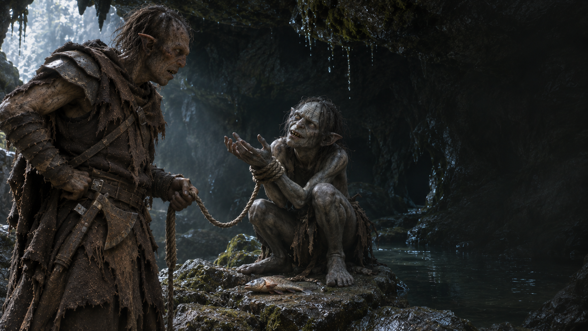

Chapitre VIII · Le retour
Une prise très bavarde
La proie est capturée. Les promesses commencent.
Écouter le prisonnierLe prisonnier marchande
Vous déposez le poisson au centre d’une boucle de corde, puis reculez dans l’ombre. Gollum hésite. Sa faim finit par l’emporter : dès qu’il tend la main, vous tirez. La boucle se resserre autour de son poignet.
Vous maîtrisez votre prisonnier et lui liez les mains avant qu’il puisse vous mordre. Pour la première fois depuis votre départ, la mission semble presque simple. Puis il se met à parler.
« Pas la Tour ! Pitié ! Nous connaissons un passage, un endroit plein de choses brillantes. L’Orque nous libère, et nous lui montrons… »
Il tire discrètement sur ses liens. Vous pouvez le ramener au Mordor ou accepter son marché. Votre capitaine n’a jamais parlé de récompense. Ce détail vous revient à un très mauvais moment.